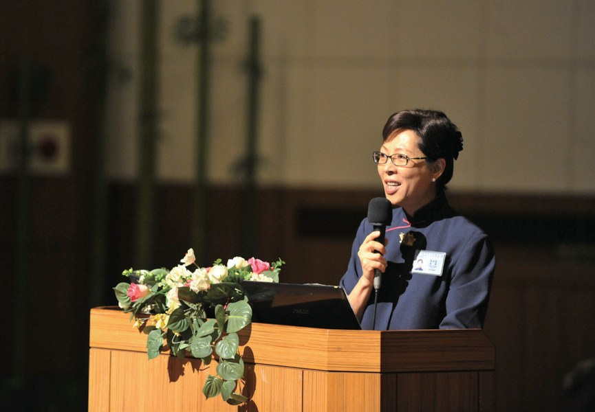
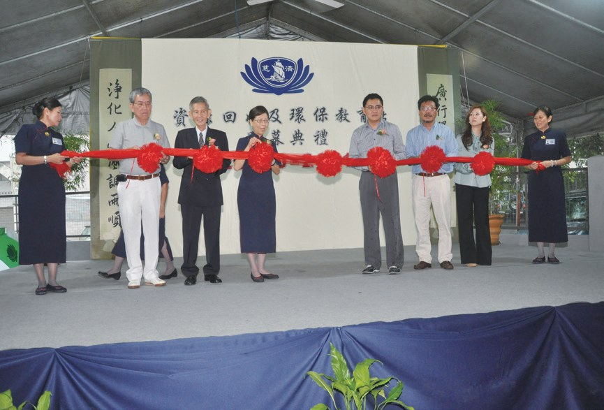
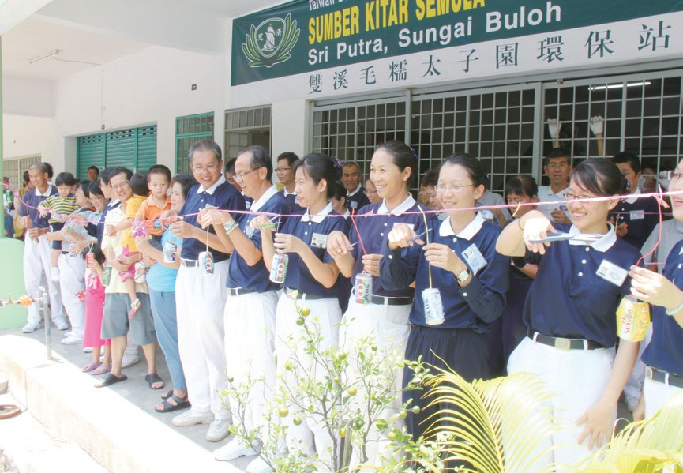
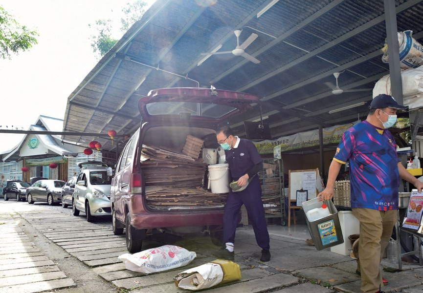
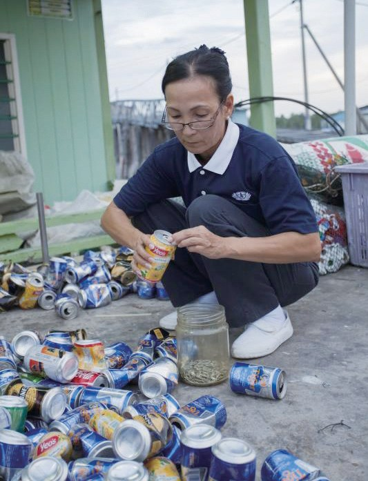
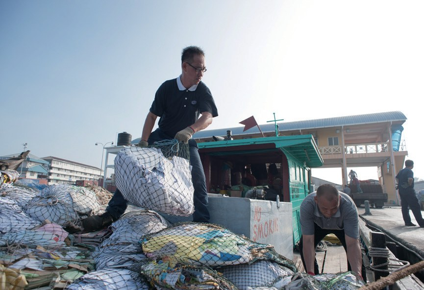
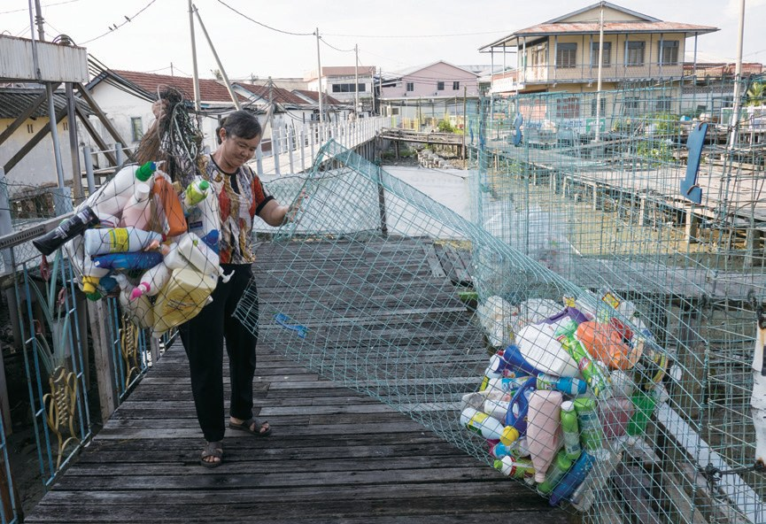
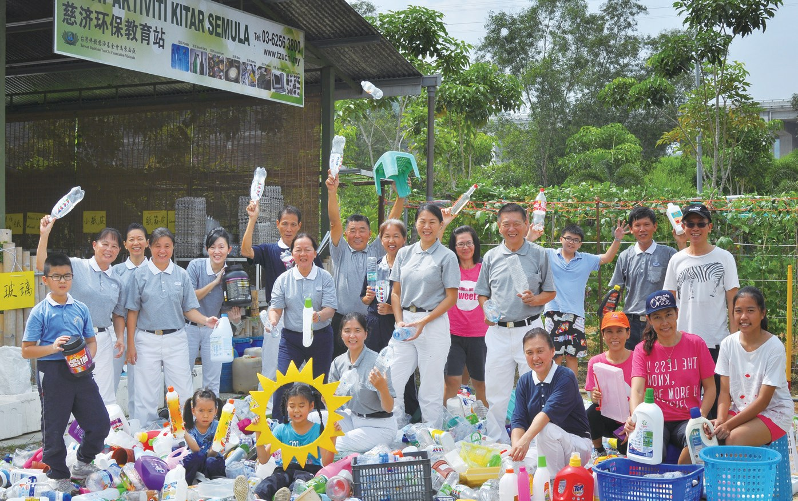

疼惜大地做環保
每個社區，都有一個環保站？

先別急著下結論，讀完再說說你的想法～
這一篇講「一協一站」：2010年，雪隆只有10個環保站，執行長簡慈露發願讓每個協力組都有一個環保站。
你會讀到開車進出的「得來速」環保站、把垃圾從海裡撈上來的吉膽島漁夫，還有把環保站當成家的人。
下面是原書的節錄，紅色底線是我們替你標出的轉折點。
讀之前：你覺得一個社區環保站，最大的用處是什麼？
一個協力組，一個環保站
2010年，雪隆只有10個環保站。閱讀引導

簡慈露受此啟發，認為每個社區要是都能有一個環保站，可以成為樂齡長者的好去處，大家互相照顧，還可以發揮良能為環境付出，將資源回收的概念落實。

大家互相照顧。
同年的11月29日，簡慈露回到臺灣參與慈濟董事會議時，即向證嚴上人發願，並喊出「一協一站」的口號！
期盼在慈濟志工團體中的最小單位，以一個協力組負責一個環保站做為努力的方向。

就有一個環保站！
志工多次和政府單位協調，提報逾二十個地點，多數為市政府的空地或志工自己擁有的住家地點。
猜一猜閱讀引導
志工提報了二十多個地點，評估後有幾個符合需求？
在眾志成城的努力下，2011年下旬，各個社區的環保站慢慢成立。

- 10個2010年p.635
- 97個2022年p.638
社區的客廳
種菜、煮素、讀書，還有「得來速」。閱讀引導
有的利用環保站的空地種植許多植物，有的隔出空間舉辦素食烹飪示範，有的開闢惜福區延續物命，有的舉辦志工共修讀書會，如同社區客廳般，讓鄰里的居民都能走入環保站。
像大家的客廳。

大多數的志工都是上班族，只能利用下班或假日的時間整理，他們努力地趕工，如清掃、裝潢，架設電纜、電燈，重新安裝天花板等，終於將廢墟般的店屋重建得煥然一新。
居民可以將車開入環保站內，於定點將整理好的回收物分別放入分類的鐵箱，即可離去，如同得來速般迅速，且不影響交通問題，也成為全馬首座自助式的環保站。
放下就走！

環保站也是許多病患重新融入人群的復健道場。
經過一段時間的努力，身體好轉了，許亞峇把握機會繼續投入環保站付出。
從海裡撈上來
島上沒有垃圾場。閱讀引導
雪蘭莪州巴生港岸外的吉膽島，時代變遷帶來豐富的物質生活，島上沒有垃圾場，居民也沒有環保的觀念，因此養成將垃圾往海裡扔的習慣。
都丟進海裡？

志工們積極向島民宣導，可將回收物送至環保站，並呼籲勿隨意將垃圾丟入海中，但島民除了無法適應，還質疑志工只是想藉著變賣資源謀利。
志工會怎麼做？
吉膽島附近海上漂浮的垃圾比陸地上還多，志工選擇以實際行動證明做環保的好處；將垃圾從海中撈上來後，再一一清洗乾淨成可以回收的狀態。
志工默默地付出，終於打動了島民，大家開始主動將回收物送至環保站。
漁夫王慕銘因不忍志工辛苦回收資源，還須自費雇船載送，毅然把自己的漁船無償借出。
借給了環保。

- 一個小時吉膽島到巴生港口p.644
- 四噸最高紀錄的回收物p.645
讓大海能呼吸
一位漁夫、一對失去兒子的夫妻、一位坐輪椅的志工。閱讀引導
吉膽島居民蔡福汶當了二十多年的漁夫，常常在捕魚時看到海面上的垃圾，每一趟出海都能撈起十多袋的垃圾，別人認為他在做無意義的事，但他仍然堅定信念，繼續盡讓海洋清淨的那一分心。
2015年他從捕魚業完全退下，改以維修水電、冷氣兼職，雖然少賺很多錢，但是他還是堅定做環保。
「我家門口這座橋要清一清了。……用一分守護大地的心，隨手撿拾海洋的垃圾，讓大海能呼吸，這就是我們要讓大家都知道的環保！」
蔡福汶改變了心念・p.647
也能呼吸！
謝若欽和陳妹仔的獨子意外離世，自此夫妻二人鬱鬱寡歡。
鄰居蔡福汶便邀約他們一起來做環保，藉著新的人生目標，鼓勵他們走出傷痛。

「……所以，我會做到不能做為止。當初因為愛家園而撈起垃圾，如今擴大了這分愛，將資源好好分類處理，不只愛家、愛地球，同時也能幫助有需要的人。」
陳妹仔表示・p.648化成了愛。
環保志工楊志堅在2014年罹患遺傳性小腦萎縮症
陳麗珠因訪視而與楊家結緣，她鼓勵楊志堅發揮生命的良能，邀約他前往環保站付出。楊志堅本想以妻子忙於工作，無人接送而拒絕，但陳麗珠卻毅然承擔起天天載送他往返環保站的責任。
如今楊志堅做得比任何人都賣力，並天天報到，將環保站當成他的第二個家。
留給子孫的淨土
上人的勉勵。閱讀引導
「……像馬來西亞慈濟人發願『一協一站』，在社區，一個協力組隊就成立一個環保站。現在更發願『一協二站』，要加倍擴大推廣環保的力量。」
上人勉勵・p.649
還要一協二站！
「慈濟人不只是為大地做環保，其實是為自己的來生留一片淨土，還要為子子孫孫留一片清淨大地。……」
上人說・p.650停一停：誰讓你記住了？閱讀引導
選一位你印象最深的人。沒有標準答案。
有人借出漁船，有人天天出海撈垃圾，有人把思念化成環保，有人把環保站當成家。哪一位讓你最有感覺？

一起回頭看看吧～
回望
依本章原文整理，每一條都標了原書頁碼。閱讀引導
背後原因
為什麼要一協一站

小川每月辦一次環保日就好，為什麼每個社區都要有環保站？
- 長者去處
環保站可以成為樂齡長者的好去處。p.635
- 就近帶動
環保站能就近帶動居民、招募志工。p.635

社區客廳環保站如同社區客廳。p.639
後續發展
一協一站一路走來

小禾從喊出口號到「得來速」環保站，經過了多少年？
- 2010.11.29
簡慈露喊出「一協一站」。p.636
- 2011.4.17
太子園環保站啟用。p.640
- 2011.10.15
吉膽島環保站成立。p.644
- 2011.10.26
巴生中路環保站啟用。p.638
- 2016
吉膽島升格環保教育站。p.645
- 2019
哥打哥文寧環保教育站啟用。p.641
吉膽島的轉變
以前和後來
小川有了環保站，吉膽島有什麼不同？
- 把垃圾往海裡扔主動把回收物送到環保站p.643–644
- 質疑志工謀利被志工的付出打動p.644
- 自費雇船載送漁夫無償借出漁船p.644
- 喪子後鬱鬱寡歡做環保走出傷痛p.647
以上只整理本章寫到的事；書裡沒寫到的，我們不替它下結論。
回頭看讀前的選擇閱讀引導
環保站背負教育大眾的責任（p.638）；陳妹仔在喪子後投入環保（p.647–648）；楊志堅把環保站當成第二個家（p.649）。回收、教育都重要，環保站也是讓人重新站起來的家。
後來是什麼打動了他們？
只有你自己看得到喔！

準備好了就一起出發～